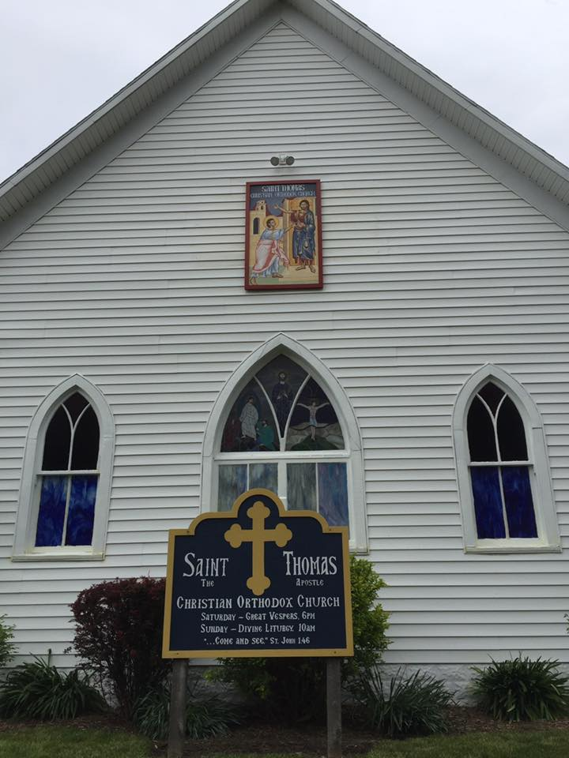
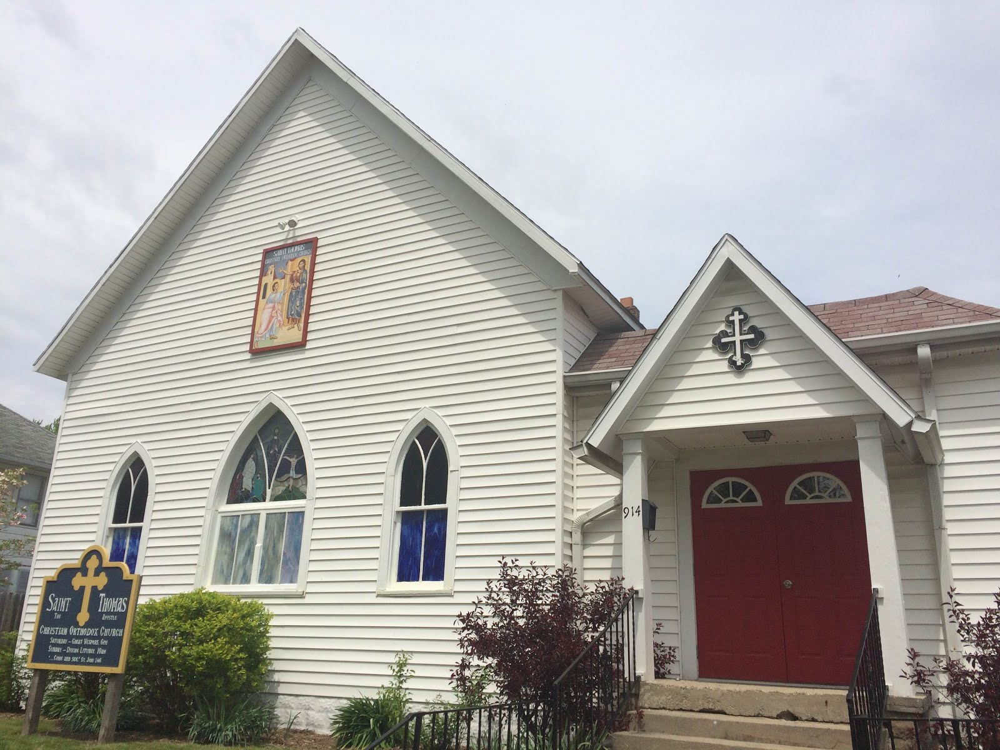

V. Rev. Philip Lashbrook
Rector
(317) 408-7803 cell

Orthodox Church in America · Midwest
Come and see.
A parish of seekers and cradle Orthodox on Taylor Street in Kokomo — the ancient faith, spoken with a Midwestern accent.
Loading next service…
Many of us came from Evangelical backgrounds. Others carried Orthodoxy here from Greece, Romania, India, and beyond. All of us are still learning how to stand before God with open hands.
Join us for liturgy, stay for coffee and conversation afterward, or simply sit and look around. You do not need to know the responses. Sometimes a quiet, worshipful presence is the best place to begin.
Weekly services · Usual schedule
The parish’s usual weekly times. Feasts, Lent, and special services may change — call or email if you are driving a distance.
Confirm via orthodoxkokomo@gmail.com or (765) 457-5045. New to Orthodox worship? What to expect →
Through the red door. Come as you are.
This community’s path into Orthodoxy began in the 1970s as a fellowship seeking the fullness of the Apostolic faith. Through study, pilgrimage, and years as Holy Comforter in the Evangelical Orthodox Church, the people kept asking Thomas’s question: is this the real thing?
On February 5, 1994, they were received into the Orthodox Church in America by Bishop Job of Chicago and the Midwest. St. Thomas the Apostle was born — a young parish adopted into a two-thousand-year Tradition.
We remain a parish of the Orthodox Church in America, Diocese of the Midwest — witnessing ancient Christianity in the modern world since 1994.
Hymn of St. Thomas · Tone 2
O Disciple of Christ, and colleague of the Apostles, your lack of faith became a confirmation of the resurrection, for your searching hand made you believe, O holy Thomas, worthy of all praise. Obtain peace for us, and great mercy.
“Blessed are those who have not seen and yet have believed.”
John 20:29
Rector
(317) 408-7803 cell
Attached clergy
Serving with the rector in the liturgical and pastoral life of the parish.
White wood. Red door. Blue sign. Outdoor icon of St. Thomas.




Near US-31 and Indiana 22. The red door faces Taylor Street.
St. Thomas the Apostle Orthodox Christian Church
914 W Taylor Street
Kokomo, IN 46901
From US-31, take Indiana 22 (Markland Ave) west to Washington Ave. North on Washington, west on W Mulberry to McCann, north to West Taylor, then east to 914.